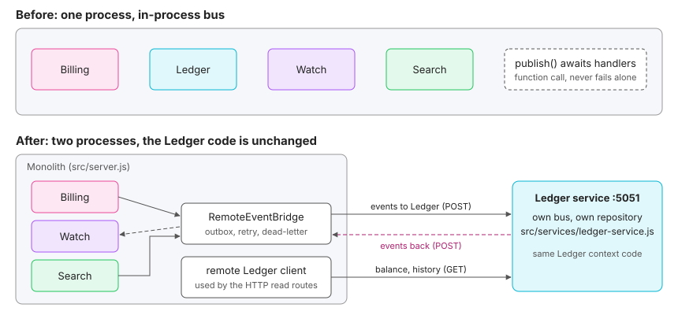

The protocol and results of the refactoring experiment behind the thesis Refactoring Monoliths with DDD and GenAI. Everything here can be reproduced from the repository, and the page says plainly what the code can and cannot prove. Source: docs/EXPERIMENT_REFACTORING.md.O protocolo e os resultados do experimento de refatoração que sustenta o TCC Refatoração de Monólitos com DDD e GenAI. Tudo aqui pode ser reproduzido a partir do repositório, e a página diz com clareza o que o código pode e não pode provar. Fonte: docs/EXPERIMENT_REFACTORING.md.
Scope. One author, one small system, three change requests and one extraction. This is an exploratory case study, not a controlled trial. Nothing here measures team productivity, onboarding time or defects.Escopo. Um autor, um sistema pequeno, três solicitações de mudança e uma extração. É um estudo de caso exploratório, não um experimento controlado. Nada aqui mede produtividade de equipe, tempo de onboarding ou defeitos.
| ID | HypothesisHipótese | How it is checkedComo é verificada |
|---|---|---|
| H1 | Locality. With contexts split inside the monolith, a business-rule change touches only code that belongs to that context.Localidade. Com contextos separados dentro do monólito, uma mudança de regra de negócio toca apenas código que pertence àquele contexto. | Replay the same change requests (CR) on a pre-split baseline and on the split code; compare the change footprint.Reaplicar as mesmas solicitações de mudança (CR) em uma base anterior à divisão e no código dividido; comparar a pegada da mudança. |
| H2 | Cheap extraction. Because contexts only talk through events, one of them can become a separate process without editing the others.Extração barata. Como os contextos só conversam por eventos, um deles pode virar um processo separado sem editar os outros. | Extract the Ledger; count the files changed outside it; run the P0 flow across two real HTTP servers.Extrair o Ledger; contar os arquivos alterados fora dele; executar o fluxo P0 em dois servidores HTTP reais. |
| H3 | Cost of the boundary. Moving a boundary from a function call to a network call breaks assumptions that were invisible in-process.Custo da fronteira. Trocar uma chamada de função por uma chamada de rede quebra premissas que eram invisíveis dentro do processo. | Catalogue every behaviour that changed (the "leaks") and prove each one with a test.Catalogar cada comportamento que mudou (os "vazamentos") e provar cada um com um teste. |
| H4 | GenAI helps to find the boundaries.GenAI ajuda a encontrar as fronteiras. | Not tested by this code. Future work / discussed qualitatively in the thesis.Não testada por este código. Trabalho futuro / discutida qualitativamente no TCC. |
tests/unit/architecture/dependency-rule.test.js): a context may require only itself and src/shared; composition roots (app.js, services/*.js) may use only a context's public entry; http and shared never require context internals. A fixture test shows the checker fails when a violation exists, so a green result means something.Regra de dependência como teste (tests/unit/architecture/dependency-rule.test.js): um contexto só pode importar a si mesmo e src/shared; raízes de composição (app.js, services/*.js) só usam a entrada pública de um contexto; http e shared nunca importam internos de contextos. Um teste com fixture mostra que o verificador falha quando há violação, então um resultado verde significa algo.scripts/change-footprint.js (per change) and scripts/context-metrics.js (per context).Scripts de métricas: scripts/change-footprint.js (por mudança) e scripts/context-metrics.js (por contexto).| ContextContexto | FilesArquivos | LinesLinhas | Imports from other contextsImports de outros contextos | Subscribes toAssina |
|---|---|---|---|---|
billing | 7 | 604 | 0 | |
integration | 2 | 89 | 0 | — |
ledger | 8 | 637 | 0 | |
scheduler | 6 | 319 | 0 | |
search | 8 | 393 | 0 | |
watch | 8 | 524 | 0 |
sourcefonte: experiments/context-metrics.json
Three change requests were applied twice: on the baseline (the code before the Billing/Ledger split, where billing/domain still held ledger classes and value objects) and on the split code. CR1 and CR2 target the Ledger, CR3 targets Billing.Três solicitações de mudança foram aplicadas duas vezes: na base original (o código antes da divisão Billing/Ledger, em que billing/domain ainda continha classes e value objects do ledger) e no código dividido. CR1 e CR2 miram o Ledger; CR3 mira o Billing.
| CR | RuleRegra |
|---|---|
| CR1 | A search debit is idempotent per price snapshot (referenceId = snapshotId; a repeated snapshot does not charge twice).Um débito de busca é idempotente por snapshot de preço (referenceId = snapshotId; um snapshot repetido não cobra duas vezes). |
| CR2 | A refund cannot exceed the available balance.Um estorno não pode exceder o saldo disponível. |
| CR3 | GatewayResultVO accepts only the statuses succeeded, failed and pending.GatewayResultVO aceita apenas os status succeeded, failed e pending. |
| WorldCenário | ChangeMudança | Files (src+test)Arquivos (src+test) | Lines +/-Linhas +/- | Foreign-concept lines in touched sourceLinhas de conceitos alheios no código tocado |
|---|---|---|---|---|
| baseline | CR1+CR2 (Ledger rules) | 2 (1+1) | +44 / -1 | 110 of 317 (PaymentIntent, CreditPack) |
| baseline | CR3 (Billing VO rule) | 2 (1+1) | +20 / -0 | 35 of 139 (EntryTypeVO, CreditBalanceVO) |
| split | CR1+CR2 (Ledger rules) | 2 (1+1) | +44 / -1 | 0 of 195 (—) |
| split | CR3 (Billing VO rule) | 2 (1+1) | +17 / -0 | 0 of 94 (—) |
sourcefonte: experiments/replay-results.json
Reading. The size of the change did not shrink: the same number of files and almost the same number of lines were touched. What changed is cohesion: in the baseline, whoever edits the file must read around concepts of another context (35 to 110 lines); in the split code, the touched file contains only its own context. H1 is supported in its weak form (the change is isolated and the reader's context is smaller), not in the strong form (fewer edits).Leitura. O tamanho da mudança não diminuiu: o mesmo número de arquivos e quase o mesmo número de linhas foram tocados. O que mudou foi a coesão: na base original, quem edita o arquivo precisa ler em volta de conceitos de outro contexto (35 a 110 linhas); no código dividido, o arquivo tocado contém apenas o seu contexto. H1 é sustentada na forma fraca (a mudança é isolada e o contexto do leitor é menor), não na forma forte (menos edições).
Honest limits. (a) Three change requests, written by the author, on a small system. (b) The foreign-concept metric partly follows from how the split was done, so it is close to tautological; its value is to make the difference visible, not to prove it. (c) Nothing here measures team productivity, onboarding time or defects.Limites. (a) Três solicitações de mudança, escritas pelo autor, em um sistema pequeno. (b) A métrica de conceitos alheios decorre em parte de como a divisão foi feita, então é quase tautológica; seu valor é tornar a diferença visível, não prová-la. (c) Nada aqui mede produtividade de equipe, tempo de onboarding ou defeitos.
The Ledger runs as its own process (src/services/ledger-service.js, yarn api:ledger) with its own bus and repository. The monolith talks to it through events over a RemoteEventBridge (in-memory outbox, retry with backoff, dead-letter, de-duplication by eventId, shared token) and through queries over HTTP (src/ledger/client.js), with the same execute shape as the local queries. Forwarded to the Ledger: UserRegistered, CreditsPurchased, RefundRequested, PriceSnapshotCaptured. Coming back: BalanceExhausted, BalanceRestored, RefundAccepted, RefundRejected.O Ledger roda como processo próprio (src/services/ledger-service.js, yarn api:ledger) com barramento e repositório próprios. O monólito conversa com ele por eventos, via RemoteEventBridge (outbox em memória, retry com backoff, dead-letter, de-duplicação por eventId, token compartilhado) e por queries HTTP (src/ledger/client.js), com o mesmo formato execute das queries locais. Enviados ao Ledger: UserRegistered, CreditsPurchased, RefundRequested, PriceSnapshotCaptured. De volta: BalanceExhausted, BalanceRestored, RefundAccepted, RefundRejected.

| KindTipo | FilesArquivos |
|---|---|
| Edited in existing codeEditado em código existente | src/app.js (option ledgerUrl, ~25 lines), src/http/create-http-app.js (1 line, mounts /internal), src/shared/errors.js (new ServiceUnavailableError), src/server.js (2 env variables)src/app.js (opção ledgerUrl, ~25 linhas), src/http/create-http-app.js (1 linha, monta /internal), src/shared/errors.js (novo ServiceUnavailableError), src/server.js (2 variáveis de ambiente) |
| NewNovo | src/shared/remote-event-bridge.js, src/ledger/client.js, src/services/ledger-service.jssrc/shared/remote-event-bridge.js, src/ledger/client.js, src/services/ledger-service.js |
| Inside Billing, Watch, Scheduler, SearchDentro de Billing, Watch, Scheduler, Search | 0 files0 arquivos |
| Inside the Ledger domain/applicationDentro do domínio/aplicação do Ledger | 0 files0 arquivos |
H2 is supported: the contexts that consume and produce Ledger events were not touched. The cost is concentrated in infrastructure that did not exist before (the bridge). The automated version is tests/integration/ledger-extraction.flow.test.js (two real HTTP servers).H2 é sustentada: os contextos que consomem e produzem eventos do Ledger não foram tocados. O custo se concentra em infraestrutura que não existia antes (a bridge). A versão automatizada é tests/integration/ledger-extraction.flow.test.js (dois servidores HTTP reais).
Each row is a behaviour that was true in-process and is no longer true across the network. All are covered by tests in ledger-extraction.flow.test.js or remote-event-bridge.test.js.Cada linha é um comportamento que era verdadeiro dentro do processo e deixa de ser pela rede. Todos são cobertos por testes em ledger-extraction.flow.test.js ou remote-event-bridge.test.js.
| # | In-process assumptionPremissa em processo | Across the networkPela rede | Mitigation in codeMitigação no código | Still openAinda em aberto |
|---|---|---|---|---|
| 1 | After publish() returns, every handler already ran.Depois que publish() retorna, todos os handlers já rodaram. | Consumers react later. Reading the balance right after registering returns 404 until the event arrives.Consumidores reagem depois. Ler o saldo logo após o cadastro retorna 404 até o evento chegar. | Bridge delivers asynchronously; a test shows the 404 then the 200.A bridge entrega de forma assíncrona; um teste mostra o 404 e depois o 200. | The client must tolerate "not yet" (retry, optimistic UI).O cliente precisa tolerar "ainda não" (retry, UI otimista). |
| 2 | RefundPaymentUseCase returns the final status.RefundPaymentUseCase retorna o status final. | It returns REFUND_REQUESTED; REFUNDED or a revert to CONFIRMED arrives later.Retorna REFUND_REQUESTED; REFUNDED ou a volta para CONFIRMED chega depois. | Two-step refund with RefundAccepted/RefundRejected.Estorno em duas etapas com RefundAccepted/RefundRejected. | API contract changes to "accepted for processing".O contrato da API passa a ser "aceito para processamento". |
| 3 | Events are delivered exactly once.Eventos são entregues exatamente uma vez. | At-least-once: the same event can arrive twice.At-least-once: o mesmo evento pode chegar duas vezes. | De-duplication by eventId in the receiver and referenceId = snapshotId in the Ledger (a duplicate charges once).De-duplicação por eventId no receptor e referenceId = snapshotId no Ledger (um duplicado cobra uma vez). | The processed-id set is in memory; it must be persistent.O conjunto de ids processados está em memória; precisa ser persistente. |
| 4 | The consumer is always up.O consumidor está sempre no ar. | When the Ledger is down, events retry and may be dead-lettered. Searches keep running and are not charged while it is down.Com o Ledger fora, eventos são reenviados e podem ir para dead-letter. As buscas continuam e não são cobradas enquanto ele está fora. | Retry with backoff, dead-letter list, 401 without token.Retry com backoff, lista de dead-letter, 401 sem token. | An overdraft window exists while the Ledger is unreachable; dead-letters need a replay job.Existe uma janela de saldo negativo enquanto o Ledger está inalcançável; dead-letters precisam de um job de reprocessamento. |
| 5 | Saving and publishing happen in the same process.Salvar e publicar acontecem no mesmo processo. | A crash between the DB write and the enqueue loses the event.Uma queda entre a escrita no banco e o enfileiramento perde o evento. | None (the outbox here is in memory).Nenhuma (o outbox aqui é em memória). | A transactional outbox in the database is required for production.Um outbox transacional no banco é necessário para produção. |
| 6 | Queries are function calls and cannot fail by themselves.Queries são chamadas de função e não falham sozinhas. | The balance query can return 503 when the Ledger is unreachable.A consulta de saldo pode retornar 503 quando o Ledger está inalcançável. | ServiceUnavailableError mapped to HTTP 503.ServiceUnavailableError mapeado para HTTP 503. | Caching or degraded reads.Cache ou leituras degradadas. |
Reading. The Ledger domain code did not change, but its consumers needed to learn about time, duplicates and failure. The price of the boundary is not paid in code size at the extraction moment; it is paid in behaviour. It is also an argument for staying a monolith until a reason to extract appears (scale, team ownership, regulatory isolation).Leitura. O código de domínio do Ledger não mudou, mas seus consumidores precisaram aprender sobre tempo, duplicidade e falha. O preço da fronteira não é pago em tamanho de código no momento da extração; é pago em comportamento. É também um argumento para continuar monólito até surgir um motivo para extrair (escala, propriedade por equipe, isolamento regulatório).
| ClaimAfirmação | StrengthForça | SourceFonte |
|---|---|---|
| Contexts are decoupled in this code base (0 cross-context imports, enforced by a test).Os contextos estão desacoplados nesta base de código (0 imports entre contextos, garantido por um teste). | StrongForte | architecture test, context-metrics.json |
| Rule changes stay inside one context and the touched file has only its own concepts.Mudanças de regra ficam dentro de um contexto e o arquivo tocado só tem conceitos próprios. | Moderate (3 CRs, one author)Moderada (3 CRs, um autor) | Experiment A |
| A context can be extracted with no change to the other contexts.Um contexto pode ser extraído sem alterar os outros contextos. | Moderate (one extraction)Moderada (uma extração) | Experiment B |
| Extraction changes consistency, duplicates and failure behaviour.A extração muda consistência, duplicidade e comportamento sob falha. | Strong for this caseForte para este caso | Experiment C tests |
| Developers perceive the structure as helpful.Desenvolvedores percebem a estrutura como útil. | Perception only (survey, n = 23)Apenas percepção (questionário, n = 23) | survey, not this repository |
| Teams are more productive / onboard faster / ship fewer bugs.Equipes são mais produtivas / integram mais rápido / entregam menos bugs. | Not provable hereNão comprovável aqui | would need a team study |
yarn api:coverage # full suite yarn api:footprint <repo> <baseRef> <headRef> <ledger|billing> yarn api:ledger # Ledger as its own process node apps/api/scripts/context-metrics.js
Two-process mode: Ledger service MONOLITH_URL, INTERNAL_TOKEN, LEDGER_PORT (default 5051), GIFT_CREDITS; monolith LEDGER_URL, INTERNAL_TOKEN. The replay is reproducible without the experiment branches: the commits are stored as patches in docs/experiments/replay/ (browse). Baseline = commit 0bb757b plus replay/baseline/*.patch; split = commit 94f0eff plus replay/split/*.patch.Modo de dois processos: serviço Ledger com MONOLITH_URL, INTERNAL_TOKEN, LEDGER_PORT (padrão 5051), GIFT_CREDITS; monólito com LEDGER_URL, INTERNAL_TOKEN. O replay é reproduzível sem as branches do experimento: os commits estão guardados como patches em docs/experiments/replay/ (ver). Base original = commit 0bb757b mais replay/baseline/*.patch; dividido = commit 94f0eff mais replay/split/*.patch.
source: docs/EXPERIMENT_REFACTORING.md, docs/experiments/